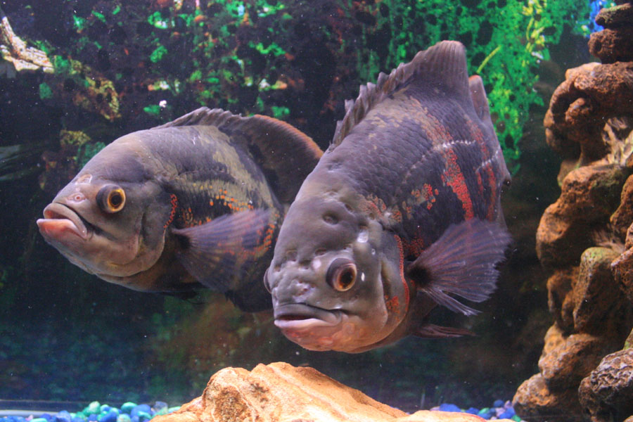
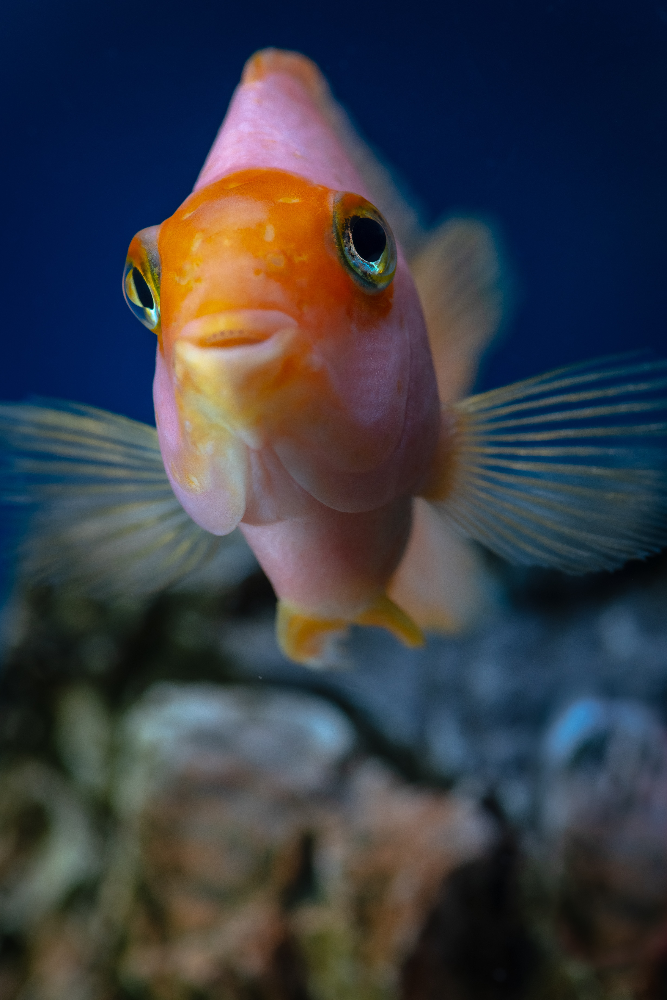
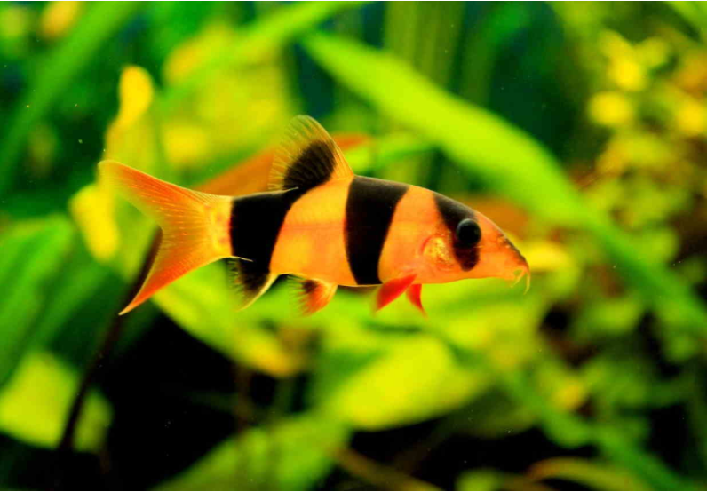
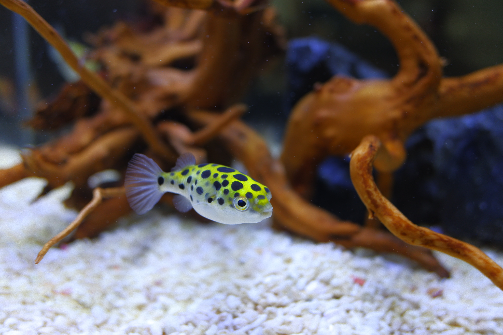
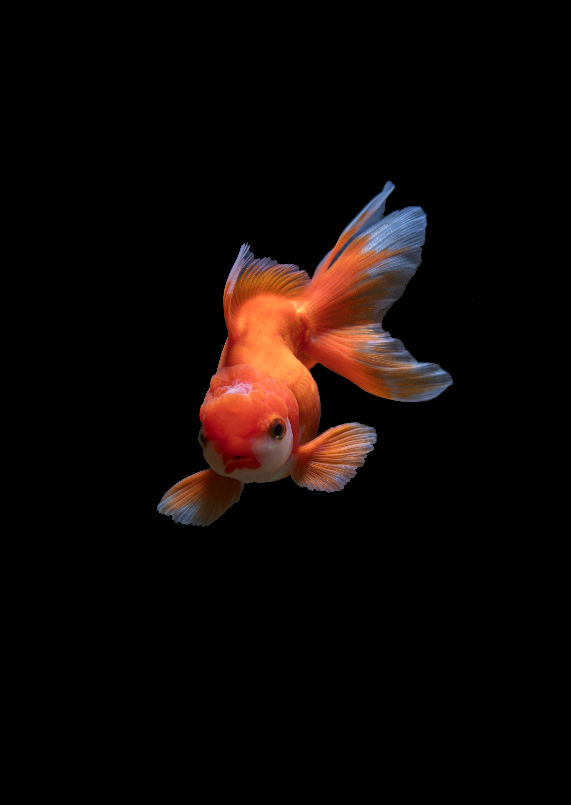

Betta Fish
Betta Fish are a variety of freshwater fish that has been widely known all around the world.
If you are a pet or decorative fish enthusiast, bettas should be inhabitants of your fish tank or pond.
The fish are also popular for their large variety of colors, patterns, shapes, and tail types thanks to mix or cross-breeding!
However, many beginners are still unaware of their betta fish personality.
Yes, they have personalities as well, just like us humans!
Also well known as Siamese fighting fish, betta fish are pretty much common among newbies in the pet or decorative fish hobbyist community.
Being only 7 cm in length, betta fish are small, colorful fish that have dramatic yet impressive personalities.
The captivating fish do not require much maintenance due to their striking physics and behaviors.
Surprisingly, they are also blessed with amazing skills, such as recognizing their owners and creating bubble nests.
Information courtesy of: https://theaquaadvisor.com/betta-fish-personality/

Oscar Cichlid
Oscar fish (also known as velvet cichlids) are an extremely popular freshwater fish in the aquarium community.
Theyre beautiful and their mannerisms make them quite fun to watch.
However, there are some things you need to know about Oscar fish care if you plan on owning one.
You see, these fish are quite aggressive and can quickly cause problems if you intend on keeping them with other fish.
Thats why we always recommend that you have some experience as an aquarist before owning one.
Oscars can be incredibly rewarding aquarium fish to care for, and once you know what youre doing its rather straightforward.
Information courtesy of: https://www.aquariumsource.com/oscar-fish/

Blood Red Parrot Chichlid
Blood parrot cichlids behavior is best when they are in the right environment.
They are curious, a bit shy, and playful in a tank where they feel comfortable.
This means providing plenty of space to avoid territorial behavior, plenty of hiding spaces to let them feel secure, and pairing them with peaceful, non-aggressive species.
For the most part, the blood parrot cichlid will hang out near its preferred shelter, swimming in and out of it.
Information courtesy of: https://fishtankadvisor.com/blood-parrot-cichlid/

Clown Loach
Clown Loaches are social and peaceful fish that are often found closely foraging in the substrate.
These fish need to travel in schools and are best kept in large community tanks.Fish Keeping World recommends keeping a tank containing at least 5 individuals.
If you keep less than 5 you will find them to be very timid and shy, spending most of their time hiding.
Sometimes they lie on their side and appear dead and this is normal!
Remember that Clown Loach (common name) fish need hiding places.
While they enjoy swimming around with tankmates and eating flake food from the bottom of the tank they need to feel safe from other fish.
Information courtesy of: www.wideopenpets.com/clown-loach-fish/

Fresh Water Pufferfish
Pufferfish are cute-looking fish with tons of personality.
They come in many different sizes and colors.
They can be found all around the world, and some species can be challenging to keep in an aquarium.
There are over 150 species of pufferfish, some with unique and peculiar hunting techniques.
There are approximately 30 different species of freshwaters pufferfish.
Some of these species include popular species like the Amazon puffer, dwarf puffer, Redeye puffer, hairy puffer, spotted Congo puffer, golden puffer, crested puffer, Mbu puffer, and figure 8 puffer.
Information courtesy of: https://www.tankfacts.com/article/freshwater-pufferfish_132

Goldfish
Goldfish are friendly and social creatures and make great aquarium pets.
They are not aggressive but can get nippy with each other if they are underfed, stressed or kept in tight conditions.
They are curious about their environment and enjoy exploring the plants, decorations and substrate in their tank.
We all know the old joke that a goldfish can only remember something for about 30 seconds, but is there any truth to the tale? It always struck me as a bit suspicious, and it turns out I was right to be skeptical. Studies show that goldfish can remember things for at least 3 months and can even distinguish time intervals!
Your goldfish cant exactly tell time, since they cant read a clock.
But if you feed and interact with your goldfish on a regular schedule they will learn to anticipate your actions.
Its actually very easy to train your goldfish to swim through hoops or dunk a miniature basketball!
Information courtesy of: "https://www.tankarium.com/goldfish/"